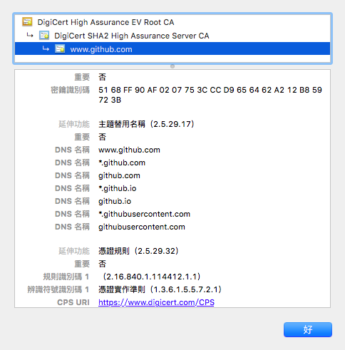
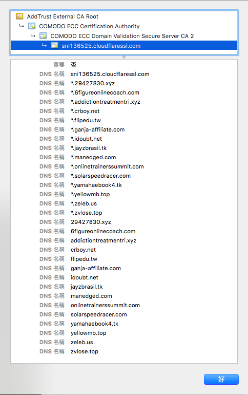

最近認真的把 blog 放上 github pages，算是差不多初始化完成了。不過 https 在這年頭是個很重要的問題啊….因為我設定了 CNAME，所以目前的網址是 hexo.crboy.net，但是如果直接連到 https://hexo.crboy.net 的話，會拿到一張 github.com 自己的 ssl 憑證，這張憑證簽給了許多 domain，其中包含 *.github.io，如下圖：

雖然對於 github pages 本來給我的 crboy.githb.io 用起來是沒問題，但我自訂的 domain 可就沒辦法了。
找了一下有沒有現成解決方案，找到這篇文章：Set Up SSL on Github Pages With Custom Domains for Free，裡面教你透過 CloudFlare 的 Flexible SSL 來設定，後半段則是教你怎麼強制使用 SSL。但我只想要單純支援 SSL，不反對 user 使用 http 連線，所以後半段就不理他了。進一步找「cloudflare flexible ssl」找到這篇文章：[免費SSL]Cloudflare 免費憑證讓網站綁上SSL加密連線(https)，得知原理其實很簡單：讓流量通過 CloudFlare（也就是 enable 他的 cdn 功能），CloudFlare 會幫你對外提供可用的 SSL 憑證。
設定方式：
- 把自己的 domain 的 DNS 服務放在 CloudFlare 上
- 啟用該 domain name 的 CDN 服務
- 到 Page Rules 新增一個 rule：URL match 設定為
DOMANE_NAME/*（例如hexo.crboy.net/*），setting 新增 SSL 並指定為 flexible - Save and Deploy 之後就好了，剩下的就是時間問題，我自己設定的時候是馬上就可以用了….（運氣好）
不過倒是有個小小的問題…..這張憑證簽給好多 domain 啊…..而且除了我的 domain 以外也有別人的 domain，而且都是 wildcard….覺得有點擔心呢XD

另一個方式（需要花點錢）是透過 AWS 的 CloudFront（也是 CDN 服務），他也有一樣模式的東西，AWS 會幫你簽一張憑證，不過這憑證是專門簽給那個 domain 的。實際上是在 AWS Certificate Manager (ACM) 中自己決定要簽給哪些 domain，AWS 會寄信給 domain 的管理者請求 approve。雖然這樣安心多了，不過要花錢….就算了吧XD
Last modified on 2016-09-28